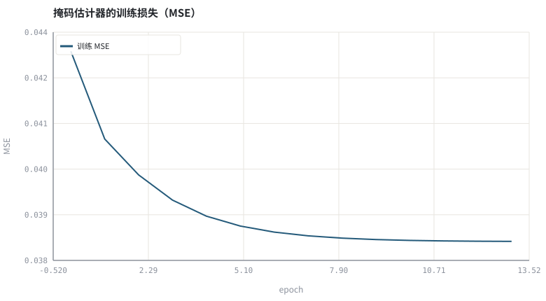
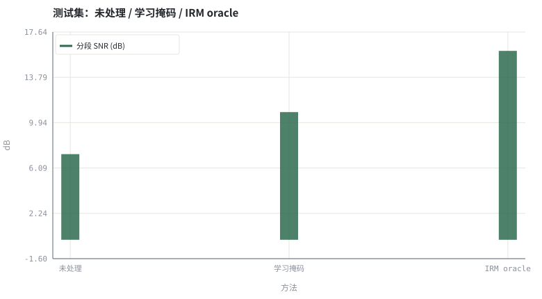

第 21 章网络骨架：DNN / CRN / U-Net / TCN / Conformer
骨架的选择，本质上是选择「上下文怎么取」与「归纳偏置放在哪」。
本章位置：第 19 章 · 时频掩码：IBM / IRM / CRM 与监督学习形式化 定义了标签，第 20 章 · 训练数据合成：RIR、噪声、SNR 配比与数据泄漏 定义了分布，本章定义 f_θ 的结构；第 22 章 · 复数域与相位：DCCRN、深度滤波与时域模型 讨论它能否连相位一起学，第 23 章 · 神经噪声抑制：从 RNNoise 到 DNS Challenge 回到具体任务。
骨架是「读多少上下文」的策略模式：DNN 拼帧、TCN 膨胀卷积、Conformer 用注意力。输出接口都是 G[t,k]，可以互换而不动下游。
- 能把主流语音增强骨架按上下文建模方式分类。
- 能估算参数量、感受野与每帧算力，并比较实时可行性。
- 能用纯标准库训练一个可解释的小型掩码估计器。
- 能说明骨架选择与因果性、延迟之间的硬约束。
§知识点地图
每个知识点都配了 1～2 个扩展学习链接；本章完整资源清单见 扩展学习。
| # | 知识点 | 扩展学习 | 状态 |
|---|---|---|---|
| 1 | 帧级 DNN | SpeechBrain ↗ · Asteroid ↗ | 正文已覆盖 |
| 2 | 卷积循环网络 CRN | The Scientist and Engineer's Guide to DSP ↗ · SciPy signal ↗ | 正文已覆盖 |
| 3 | U-Net 编解码 | SpeechBrain ↗ · Asteroid ↗ | 正文已覆盖 |
| 4 | 时间卷积网络 TCN | The Scientist and Engineer's Guide to DSP ↗ · SciPy signal ↗ | 正文已覆盖 |
| 5 | Conformer 与注意力 | SpeechBrain ↗ · Asteroid ↗ | 正文已覆盖 |
| 6 | 感受野与状态缓存 | SpeechBrain ↗ · Asteroid ↗ | 正文已覆盖 |
| 7 | 参数量与 MACs | SpeechBrain ↗ · Asteroid ↗ | 正文已覆盖 |
| 8 | 骨架与延迟 | SpeechBrain ↗ · Asteroid ↗ | 正文已覆盖 |
§21.1五种骨架，五种取上下文的方式
| 骨架 | 上下文来源 | 优势 | 实时代价 |
|---|---|---|---|
| DNN / MLP | 拼接相邻若干帧 | 最简单、易量化 | 参数量大、无长时依赖 |
| CRN | CNN 提特征 + RNN 沿时间 | 参数省、序列建模强 | RNN 状态逐帧依赖，难并行 |
| U-Net | 编码器下采样 + 跳连 | 多尺度时频特征 | 非因果卷积易引入未来帧 |
| TCN | 膨胀因果卷积 | 并行、感受野可控 | 需缓存历史，深栈有延迟 |
| Conformer | 卷积 + 自注意力 | 长时依赖与局部特征兼得 | 注意力开销与缓存最大 |
它们的输出形状完全一样：G[t,k] 或 Ŝ[t,k]。差别只在于为了算出第 t 帧，允许看多少过去、多少未来、多少频率邻域。实时 3A 只允许看过去，因此 TCN 与因果 CRN 最常见。
§21.2把骨架换算成三笔账
感受野 ≈ (K−1)·Σ_t d_t + 1 ；参数量 ≈ Σ_l C_in·C_out·K_l ；RTF = T_计算 / T_帧长
- 感受野：膨胀因果卷积用
d = 1,2,4,8,...指数扩张，几十层就能覆盖一秒上下文，但状态缓存必须保存每层历史。 - 参数量：逐帧全连接把上下文帧数直接乘进输入维度，最容易膨胀；深度可分离卷积能把 MACs 降一个量级。
- 延迟：算法延迟 = 帧长 + 前瞻 + 分块缓存；非因果 U-Net 的前瞻在实时链路里必须显式扣除（第 28 章 · 延迟预算与 RTF：实时链路账本）。
实验用纯标准库训练一个 3 参数的 sigmoid 线性掩码估计器。它不是深度网络，但完整包含「特征 → 参数 → 损失 → 梯度 → 掩码 → ISTFT」这条闭环，用来把骨架的作用看清楚：更复杂的骨架只是把特征与 f_θ 换得更强。
§Python 实验
实验 21-1 · 训练一个 3 参数的掩码估计器并估算骨架开销
#!/usr/bin/env python3
# -*- coding: utf-8 -*-
"""用 SGD 训练小型 sigmoid 掩码估计器，打印损失曲线、测试集指标与主流骨架参数量估算。
全部语音 / 噪声 / 房间冲激响应均为代码合成信号，仅用于教学演示机制与量级。
"""
from __future__ import annotations
import math
import pathlib
import random
import statistics
import sys
import time
_here = pathlib.Path(__file__).resolve()
for _p in _here.parents:
if (_p / "tools" / "dsp.py").exists():
sys.path.insert(0, str(_p / "tools"))
break
from dsp import (SAMPLE_RATE, fft, hann, stft, istft, magnitude_db, spectrum,
white_noise, tone, chirp, synthetic_speech, rir, convolve,
fft_convolve, delay, clip, normalize_peak, rms, rolling_rms,
smooth, db, energy_db, snr_db, erle_db, seg_snr_db,
scale_align, si_sdr_db, lufs_approx,
write_wav, read_wav, wav_info)
from chart import Chart, heatmap, BLUE, RED, GREEN, AMBER
FIG = _here.parents[1] / "fig"
AUDIO = _here.parents[1] / "audio"
FIG.mkdir(exist_ok=True)
AUDIO.mkdir(exist_ok=True)
random.seed(7)
# ---- 参数区 ----
N = 4000
N_FFT, HOP = 128, 64
NOISE_AMP = 0.035
EPOCHS, LR = 14, 0.20
CONTEXT_FRAMES, HIDDEN, LAYERS = 5, 128, 3
# ---- 计算与作图 ----
tr_s = synthetic_speech(random.Random(11), N)
tr_n = white_noise(random.Random(12), N, NOISE_AMP)
te_s = synthetic_speech(random.Random(21), N)
te_n = white_noise(random.Random(22), N, NOISE_AMP)
tr_y = [tr_s[i] + tr_n[i] for i in range(N)]
te_y = [te_s[i] + te_n[i] for i in range(N)]
fy, fs, fn = stft(tr_y, N_FFT, HOP), stft(tr_s, N_FFT, HOP), stft(tr_n, N_FFT, HOP)
def feats(mag, avg):
l, la = math.log10(mag + 1e-6), math.log10(avg + 1e-6)
return [1.0, max(-2.0, min(1.0, l + 2.0)), max(-2.0, min(2.0, la - l))]
def predict(fv, w):
z = max(-20.0, min(20.0, sum(w[j] * fv[j] for j in range(3))))
return 1.0 / (1.0 + math.exp(-z))
train_set = []
for idx, (ry, iy) in enumerate(fy):
rs, is_ = fs[idx]
rn, in_ = fn[idx]
mags = [math.hypot(ry[k], iy[k]) for k in range(N_FFT)]
avg = sum(mags) / N_FFT
for k in range(N_FFT):
ms, mn = math.hypot(rs[k], is_[k]), math.hypot(rn[k], in_[k])
train_set.append((feats(mags[k], avg), ms / (ms + mn + 1e-9)))
w, losses = [0.0, 0.0, 0.0], []
for ep in range(EPOCHS):
total = 0.0
for fv, t in train_set:
p = predict(fv, w)
err = p - t
total += err * err
d = err * p * (1.0 - p)
for j in range(3):
w[j] -= LR * d * fv[j]
losses.append(total / len(train_set))
def apply_model(signal, gain_fn):
frames = stft(signal, N_FFT, HOP)
for ry, iy in frames:
mags = [math.hypot(ry[k], iy[k]) for k in range(N_FFT)]
avg = sum(mags) / N_FFT
for k in range(N_FFT):
g = gain_fn(feats(mags[k], avg))
ry[k] *= g
iy[k] *= g
return istft(frames, N_FFT, HOP, N)
learned = apply_model(te_y, lambda fv: predict(fv, w))
ts, tn = stft(te_s, N_FFT, HOP), stft(te_n, N_FFT, HOP)
def oracle(idx, k):
rs, is_ = ts[idx]
rn, in_ = tn[idx]
ms, mn = math.hypot(rs[k], is_[k]), math.hypot(rn[k], in_[k])
return ms / (ms + mn + 1e-9)
frames = stft(te_y, N_FFT, HOP)
for idx, (ry, iy) in enumerate(frames):
for k in range(N_FFT):
g = oracle(idx, k)
ry[k] *= g
iy[k] *= g
irm = istft(frames, N_FFT, HOP, N)
scores = [seg_snr_db(te_s, scale_align(s, te_s)) for s in (te_y, learned, irm)]
c = Chart(FIG / "21-training.svg", "掩码估计器的训练损失（MSE）", xlabel="epoch", ylabel="MSE")
c.line(range(EPOCHS), losses, BLUE, label="训练 MSE")
print("训练图:", c.save())
b = Chart(FIG / "21-models.svg", "测试集：未处理 / 学习掩码 / IRM oracle", xlabel="方法", ylabel="dB",
xticks=[(0, "未处理"), (1, "学习掩码"), (2, "IRM oracle")])
b.bars(range(3), scores, GREEN, label="分段 SNR (dB)")
print("模型图:", b.save())
dnn_params = (N_FFT // 2) * CONTEXT_FRAMES * HIDDEN + (LAYERS - 1) * HIDDEN * HIDDEN + HIDDEN * (N_FFT // 2)
write_wav(AUDIO / "21-test-noisy.wav", normalize_peak(te_y))
write_wav(AUDIO / "21-test-learned.wav", normalize_peak(learned))
print("训练 MSE 首=%.5f 末=%.5f | 学得权重 w=%s" %
(losses[0], losses[-1], "[" + ", ".join("%.3f" % v for v in w) + "]"))
print("测试 segSNR 未处理=%.2f 学习掩码=%.2f IRM oracle=%.2f dB" % tuple(scores))
print("参数量估算: 本实验=3 | 帧级DNN(C=%d,L=%d,ctx=%d)≈%d | SAMPLE_RATE=%d" %
(HIDDEN, LAYERS, CONTEXT_FRAMES, dnn_params, SAMPLE_RATE))操作：观察训练 MSE 是否单调下降；比较学习掩码与 oracle 的差距。 预期与判读：训练 MSE 明显下降，学习掩码的分段 SNR 高于未处理但低于 IRM oracle。差距来自特征与模型容量：更强的骨架正是为了缩小这段距离，而不是改变链路或指标。
改参数看趋势：把 EPOCHS 改成 2，观察欠拟合；把 NOISE_AMP 提到 0.10，观察差距拉大。 文件位置：part4/21-network-backbones/code/21-network-backbones.py


21-test-noisy.wav
测试集带噪输入（16 kHz / 16-bit 单声道，代码合成信号，不是真实录音）
21-test-learned.wav
3 参数学习掩码的输出（16 kHz / 16-bit 单声道，代码合成信号，不是真实录音）
代码块右上角可一键复制；仓库里的 code/*.py 由 tools/extract_code.py 从这些代码块自动抽取。脚本只用标准库、固定 random.seed(7)，运行后写出 fig/*.svg 与 audio/*.wav；批量运行用 ./tools/run_python.sh。
§可选真机命令片段
以下命令不参与批量运行，需要本机自行安装对应工具。滤镜是否可用取决于本机 ffmpeg 版本与编译选项，请先用 ffmpeg -filters / ffmpeg -version 自查，并以 https://ffmpeg.org/ffmpeg-filters.html 与各自官方文档为准；本书不假定任何特定版本具备某项能力。
查看 SpeechBrain 的语音增强配方目录
git clone --depth 1 https://github.com/speechbrain/speechbrain && ls speechbrain/recipes/说明：recipes 下按数据集组织的增强/分离训练脚本是当前骨架的工业参照；请以其 README 与许可为准，本书实验不依赖 PyTorch。
§本章参考资料
按本章知识点挑选的精读资料；更多检索入口见 扩展学习。
§相关开源工程
下列工程仅作技术参照，版权与许可证归各自维护者所有。本书实验不依赖它们，也与之无从属关系。
§常见误区
- 用非因果卷积的前瞻做实时指标，忘了扣算法延迟。
- 只比较参数量，忽略逐帧 MACs 与内存带宽。
- 把骨架的论文分数直接迁移到自己的数据分布上。
- 忽略 RNN/TCN 的状态缓存开销（第 27 章 · 因果性与流式推理：状态缓存、感受野）。
§习题与思考
- 估算 3 层膨胀 TCN 的感受野与状态缓存大小。
- 解释为什么实时 3A 偏爱因果 TCN 而非双向 U-Net。
- 为本实验的小模型增加两个特征，说明它们为什么有用。
§扩展学习
继续检索
- Google Scholar：DNN CRN U-Net TCN speech enhancement architecture ↗
- arXiv：DNN CRN U-Net TCN speech enhancement architecture ↗
- GitHub：DNN CRN U-Net TCN speech enhancement architecture ↗
全书链接总表见 FFmpeg Filters 文档 ↗ 与 附录 A.7；滤镜是否可用请以本机 ffmpeg -filters 为准。